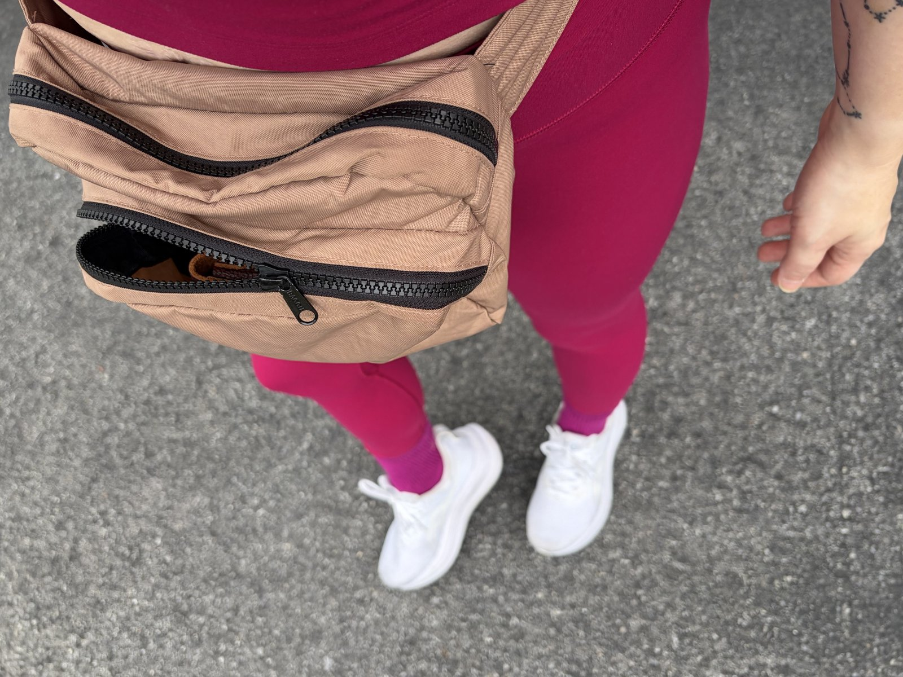

On a whim, I signed up for a half marathon
One chilly day this past March, an email popped up in my work inbox: a few of my colleagues were planning to run a half marathon the following fall, and did anyone want to join them? I am not a runner but I was feeling frisky, so on a whim, I signed up!

The first mile
My first attempt at a mile took sixteen minutes and felt like my lungs were going to collapse, but slowly it started getting easier.
I went through a few iterations of my running kit before finding what works — while I love barefoot shoes for everyday wear, I found well-cushioned Asics Gel Nimbus 28's to be the easiest on my weary ankles. I use a trusty Baggu fanny pack to hold my phone, keys and a small water bottle, and whatever clearance Lululemon Align set is fresh out of the laundry.
Still going
Thanks to many long sweaty loops around my neighborhood, my mile time is down to 9:30 and I completed my first 10k this weekend (now I just have to double it!).
The miles are adding up, the half marathon is on the calendar for this fall, and somewhere along the way "Never Ran Before" magically turned into "I think 13 miles is maybe sorta possible."
More running updates to come as I stumble my way toward that starting line.